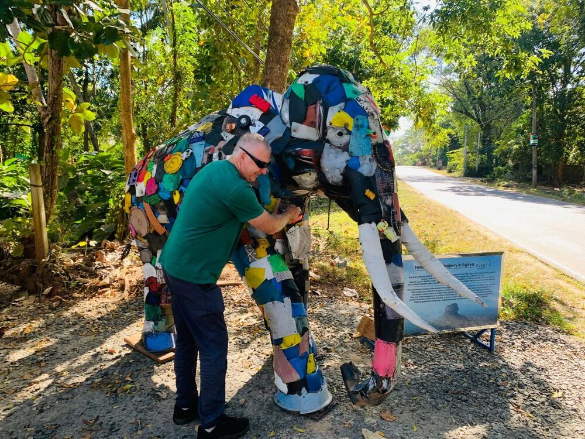

ZeroPlastic Movement Sri Lanka
A Sri Lankan environmental organisation working to cut plastic waste and build demand for plastic alternatives — through education, community cleanups, a youth-led ZeroPlastic Club network in universities, and partnerships with companies, government and civil society organisations.
- Volunteer with us
- Community cleanups
- Youth & university clubs
- Corporate CSR & ESG
- Plastic reduction
- Civil society collaboration
An environmental organisation built on volunteers.
ZeroPlastic Movement's mission is to create behavioural change among citizens and institutions to reduce plastic waste, while building demand for plastic alternatives. The guiding idea is simple: zero plastic in nature, zero microplastics in humans.
The work is anchored on three objectives: driving social behaviour change around the Zero Plastic 4Rs — refuse, reduce, reuse, recycle; encouraging the use of sustainable plastic alternatives; and expanding and empowering the ZeroPlastic Club network. The movement is supported by over 11,000 volunteers and collaborates with government entities, corporations, INGOs and civil society organisations.
In 2023 ZeroPlastic Movement recorded the highest number of volunteer hours in Sri Lanka, recognised by UN Volunteers.
Four ways the movement tackles plastic waste in Sri Lanka.
Prevention — awareness and education
Raising awareness and educating communities to refuse and reduce plastic use, to cut pollution at the source and promote sustainable practices. More than 2 million people have been educated through ZeroPlastic Club activities.
Removal — cleanups and plastic traps
Community-driven cleanups, plus plastic traps deployed in waterways to capture waste before it reaches the ocean. Over 1,000 cleanup events have been organised, and 8 canal and river strainers deployed in the Colombo and Galle districts.
Reduction — plastic alternatives
Supporting industries and innovations producing alternatives to single-use plastic. Over 120 plastic-alternative industries have been supported, and more than 350 plastic-alternative products published on the ZeroPlastic marketplace.
Assessment — ZeroPlastic Certification
ZeroPlastic Certification, offered in partnership with Control Union, recognises businesses committed to reducing plastic pollution and advancing sustainable practices.
Environmental volunteering in Sri Lanka.
ZeroPlastic volunteers come from government and non-government backgrounds and work together on the movement's objectives. Volunteering is open to people who want to do something practical about the plastic crisis.
- Community and beach cleanups
- Join cleanup drives and environmental education activities. Over 100,000 individuals have been mobilised for environmental education and cleanup drives.
- A volunteer certificate
- Volunteers receive a volunteer certificate recognising their contribution.
- Internship opportunities for students
- Students can take up internship opportunities through the movement.
- A platform and a network
- A platform to showcase your talents, opportunities to take on leadership roles, and a network across the movement.
- Volunteer hours, digitised
- The ZeroPlastic App promotes volunteerism among youth and communities and records volunteer hours digitally.
- Report plastic pollution
- Anyone can submit plastic pollution violations, which are notified to the authorities for faster environmental action.
A youth-led club network in universities and schools.
The ZeroPlastic Club network is made up of societies established in universities, with the model also established in some schools and expanding across the region. Over 11,000 activists are engaged under ZeroPlastic clubs.
University societies
ZeroPlastic Clubs run as student societies inside universities, organising education and cleanup activity on and beyond campus.
Schools
The club model has been established in some schools, with ongoing expansion.
Leadership
Volunteers can take on leadership roles within the movement and lead activities in their own communities.
Working alongside other organisations.
ZeroPlastic Movement collaborates with government entities, corporations, INGOs and civil society organisations to widen the reach of its work, and has fostered public–private partnerships to tackle the plastic problem.
If you are an environmental group, nonprofit, NGO, community organisation or another civil society organisation working on plastic waste, waste management or environmental education in Sri Lanka, we are open to collaborating on joint activity.
Corporate sustainability and CSR partnerships.
Companies work with ZeroPlastic Movement on environmental CSR and sustainability programmes. Public–private partnerships are part of how the movement operates.
Employee volunteering
Involve your team in cleanup drives and environmental education activity, with volunteer hours recorded through the ZeroPlastic App.
Plastic reduction programmes
Work on reducing single-use plastic in your operations, supported by the movement's work on plastic alternatives.
ZeroPlastic Certification
Certification offered in partnership with Control Union, recognising businesses committed to reducing plastic pollution.
Supporting alternatives
Connect with the 120+ plastic-alternative industries and 350+ products the movement has supported and published.
Tell us how you would like to get involved.
Whether you want to volunteer, bring your company into a CSR partnership, collaborate as an organisation, or ask something else — send us a note and the team will get back to you.
Thanks — we'll be in touch.
Your enquiry has reached the ZeroPlastic team. We usually reply within a day or two.
Common questions.
What is ZeroPlastic Movement?
ZeroPlastic Movement is a Sri Lankan environmental organisation whose mission is to create behavioural change among citizens and institutions to reduce plastic waste, while building demand for plastic alternatives. It works through awareness and education, community cleanups and plastic traps, support for plastic-alternative industries, and ZeroPlastic Certification offered in partnership with Control Union.
How can I volunteer in Sri Lanka with ZeroPlastic?
Send an enquiry through the form on this page and choose "Volunteer". ZeroPlastic volunteers join cleanup drives and environmental education activities, receive a volunteer certificate, and can record their volunteer hours through the ZeroPlastic App.
Are there environmental volunteering opportunities in Sri Lanka?
Yes. The movement mobilises volunteers for environmental education and cleanup drives — over 100,000 individuals have taken part — and volunteers come from both government and non-government backgrounds.
Does ZeroPlastic run beach cleanups?
Yes. Community-driven cleanups are one of the movement's four areas of work, and more than 1,000 cleanup events have been organised across the country. Plastic traps have also been deployed in waterways in the Colombo and Galle districts to capture waste before it reaches the ocean.
How can companies partner with ZeroPlastic?
Companies work with the movement on environmental CSR and sustainability programmes, employee volunteering, plastic reduction, and ZeroPlastic Certification in partnership with Control Union. Choose "Corporate CSR / ESG Partnership" in the form to start a conversation.
Does ZeroPlastic work with civil society organisations?
Yes. ZeroPlastic Movement collaborates with government entities, corporations, INGOs and civil society organisations, and has fostered public–private partnerships to tackle the plastic problem.
How can young people join?
Through the ZeroPlastic Club network, which is made up of societies established in universities, with the model also established in some schools and expanding across the region. Over 11,000 activists are engaged under ZeroPlastic clubs, and students can also take up internship opportunities.
How can organisations reduce single-use plastic?
The movement's work centres on the Zero Plastic 4Rs — refuse, reduce, reuse, recycle — combined with switching to sustainable alternatives. Over 120 plastic-alternative industries have been supported and more than 350 plastic-alternative products published on the ZeroPlastic marketplace. Get in touch to discuss a plastic reduction programme.